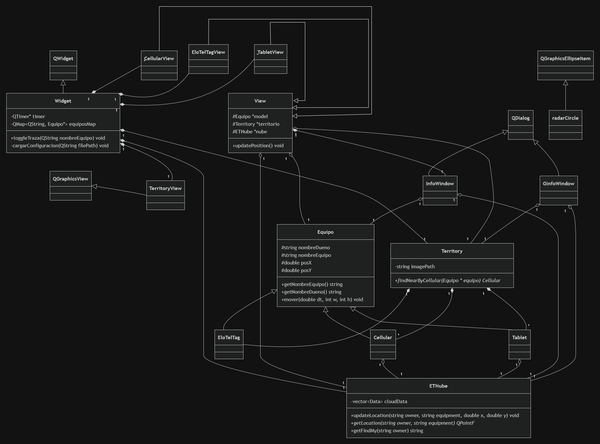

Figura 1: Diagrama de clases correspondiente a la última etapa del simulador.
Al ejecutar el programa, la clase Widget actúa como el orquestador principal. Esta instancia lee la configuración y crea las entidades de la simulación: el modelo Territory, la base de datos centralizada ETNube, y los dispositivos Cellular, Tablet y EloTelTag. Por cada modelo lógico creado, el Widget instancia su version derivada de View, insertándolas en la escena gráfica gestionada por TerritoryView.
Una vez que el usuario presiona "Play", la interacción ocurre impulsada por eventos de tiempo (QTimer). La ejecucion ocurre de la siguiente forma:
Durante el desarrollo de esta tarea, se presentaron los siguientes desafíos técnicos relacionados con el entorno de Qt y C++:
| Dificultad Presentada | Solución Implementada |
|---|---|
| 1. Sincronización de coordenadas entre el Modelo y QGraphicsItem: Inicialmente, los objetos gráficos no se renderizaban en las posiciones correctas debido a la diferencia entre el sistema de coordenadas lógicas de la clase Equipo y el sistema de coordenadas locales de la escena gráfica en Qt. | Se implementó el método updatePosition() en la clase base View, el cual se llama en cada TimeOut del QTimer. Este método fuerza la sincronización usando setPos(model->getX(), model->getY()), asegurando que la representación gráfica siempre refleje los datos matemáticos del modelo. |
| 2. Filtrado eficiente de dispositivos en rango (Territory): Identificar si un EloTelTag estaba cerca de un Cellular requería iterar constantemente sobre todos los equipos, lo cual inicialmente causaba sobrecarga al ejecutar el programa. | Se encapsuló la lógica de búsqueda espacial en la clase Territory mediante el método findNearByCellular(), utilizando la validación booleana enRango() de la clase Equipo. Esto permitió delegar la responsabilidad matemática fuera de las clases gráficas, manteniendo el código limpio. |
| 3. Comprensión de la biblioteca de eventos gráficos de Qt: Al inicio, hubo dificultades para capturar los clics del usuario sobre los dispositivos en el mapa, ya que se intentó utilizar los eventos de ratón estándar de los widgets tradicionales, lo cual no funcionaba dentro del entorno de QGraphicsScene. | Se estudió la documentación de la biblioteca gráfica de Qt y se aprendió a manejar la propagación de eventos específicos de la escena. La solución fue sobreescribir el método mousePressEvent(QGraphicsSceneMouseEvent *event) y utilizar sceneEventFilter() en la clase base View, permitiendo detectar clics exactos sobre cada ítem. |
Se realizo el punto 4.5 de la tarea para el puntaje extra.